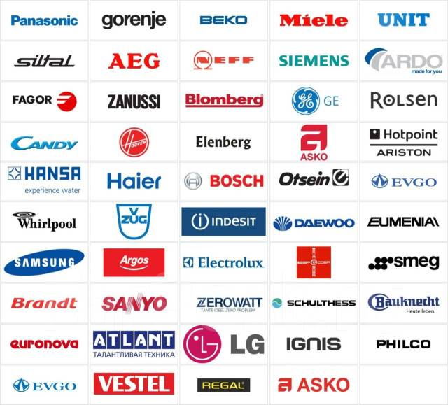
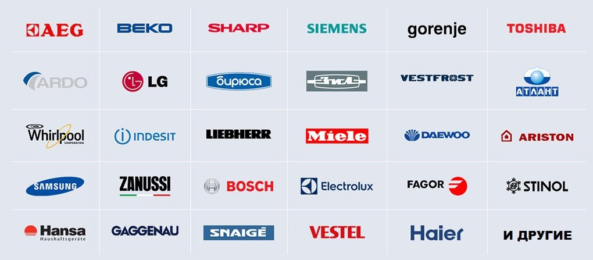
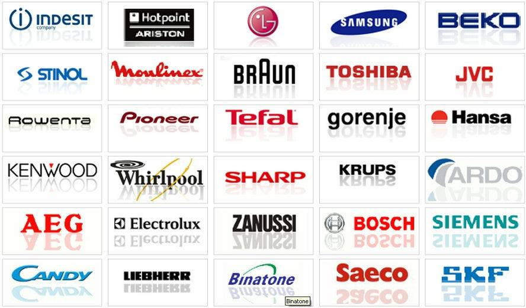
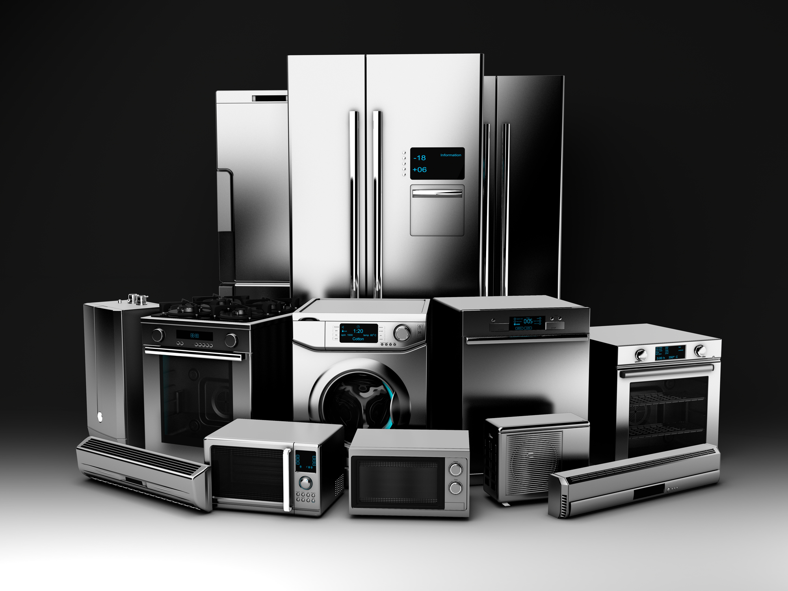

Описание товара:
Стиральная машина служит для очистки белья и одежды, другого текстиля, для приведения тканей в приличный вид
Фирмы производящие стиральные машины:
Характеристики:
Стиральные машины данных фирм отлично себя показывают в повседневной жизни среднестатистичекого человека
Нужно понимать что ценовые категории у стиральных машин разные и для бытового пользование вполне достаточно стиральной машины в приделах 30000 рублей. Помимо ценовой категории необходимо учитывать и вместимость стиральной машины, энергопотребление, нужные и не нужные функции, размер стиральной машины. Учитывая все данные критерии у вас получится подобрать относительно недорогую стиральную машину, которая удавлетворит ваши потребности в стирке
Более подробный обзор:
2.ХолодильникиОписание товара:
Холодильник — устройство, поддерживающее низкую температуру в теплоизолированной камере. Применяется обычно для хранения пищи или предметов, требующих хранения в прохладном месте
Фирмы производящие Холодильники:
Характеристики товара:
Холодильники данных производителей есть как для пользования в повседневной жизни, так и специализированные, такие как например для мороженного или промышленный холодильник
Выбор холодильника схож с выбором стиральной машины, но и тут есть свои нюансы.А именно максимальная и минимальная температура, от которой может варьироваться цена
Более подробный обзор:
3.ПылесосыОписание товара:
Пылесос — агрегат для уборки пыли и загрязнений с поверхностей посредством всасывания потоком воздуха. Пыль и загрязнения накапливаются в пылесборнике, из которого они должны регулярно удаляться
Фирмы производящие пылесосы:
Характеристики товара:
Пылесосы данных производителей различаются по мощности и размерам, то есть при покупке пылесоса необходимо это учитывать. Например при покупке пылесоса для автомобиля нет смосла покупать пылесос средних или больших размеров и питанием от внешней сети, нужен маленький пылесос с питанием от батареек или аккумулятора
Более подробный обзор:
 Все права защищены